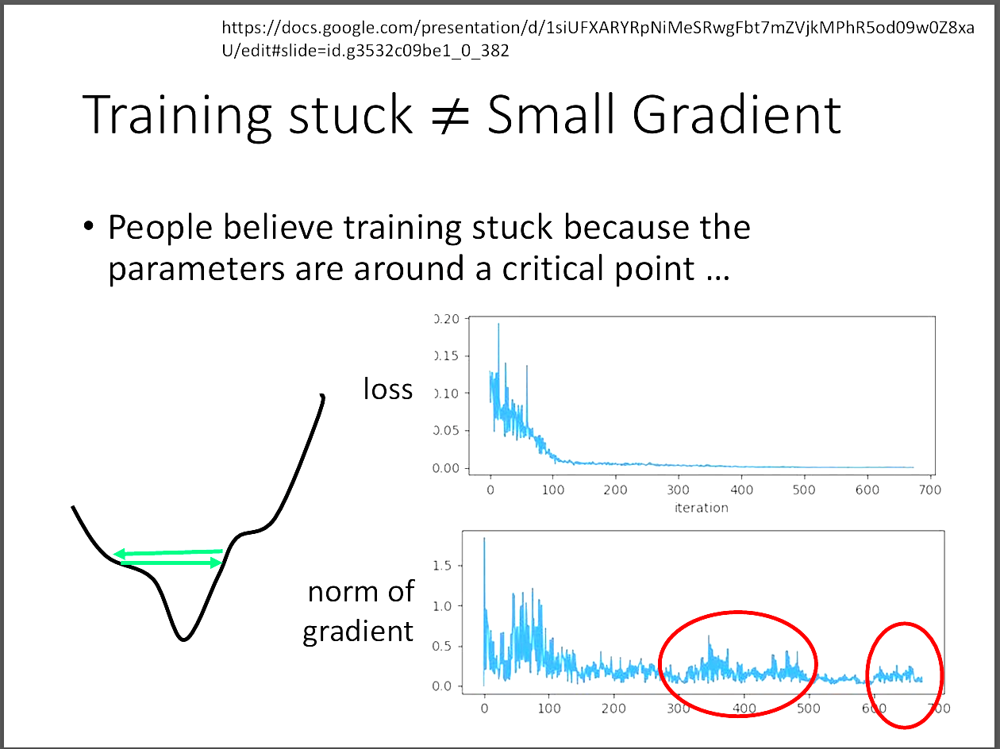
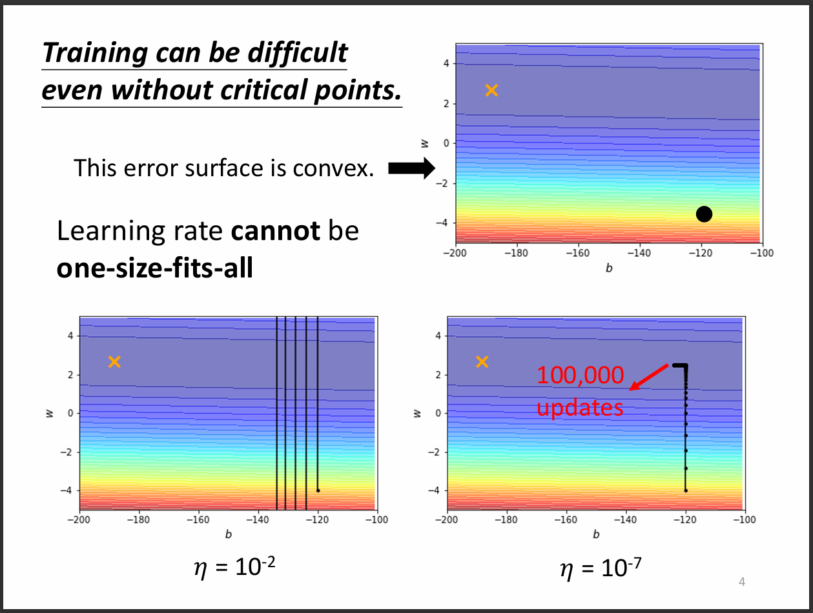
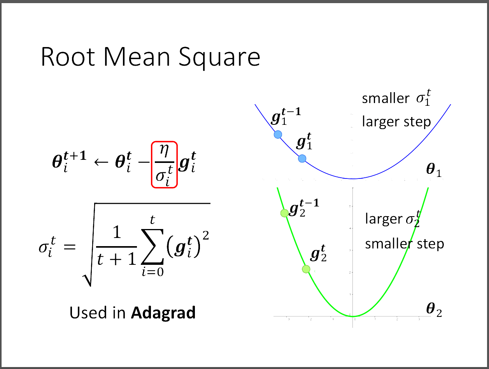
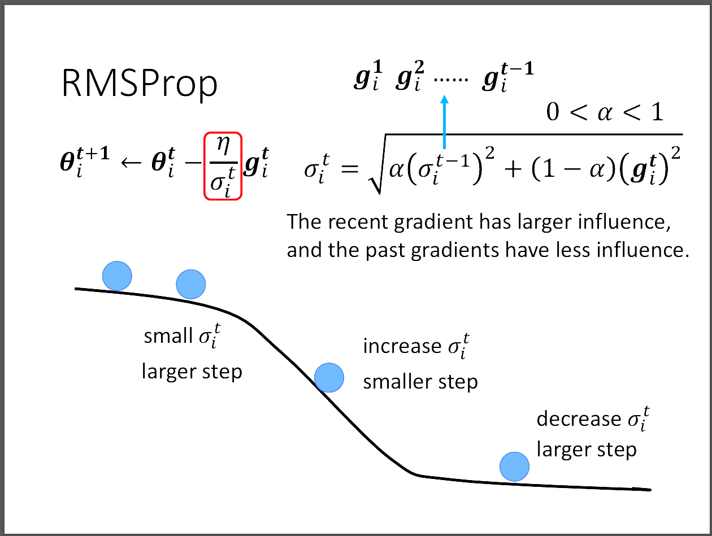
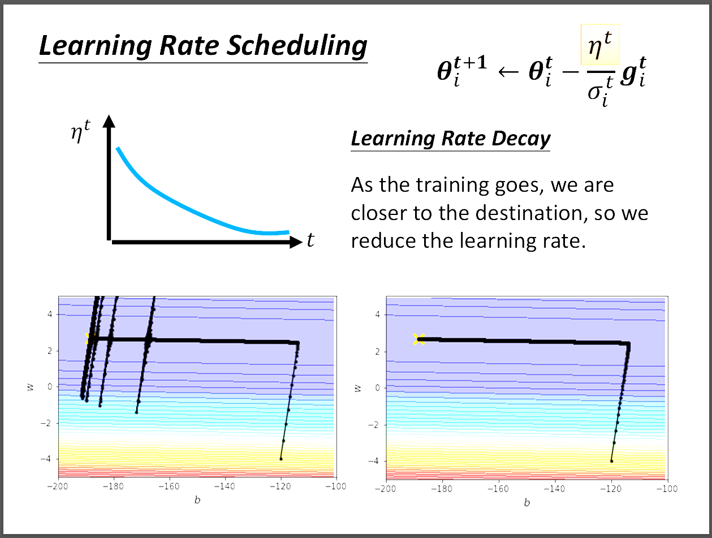
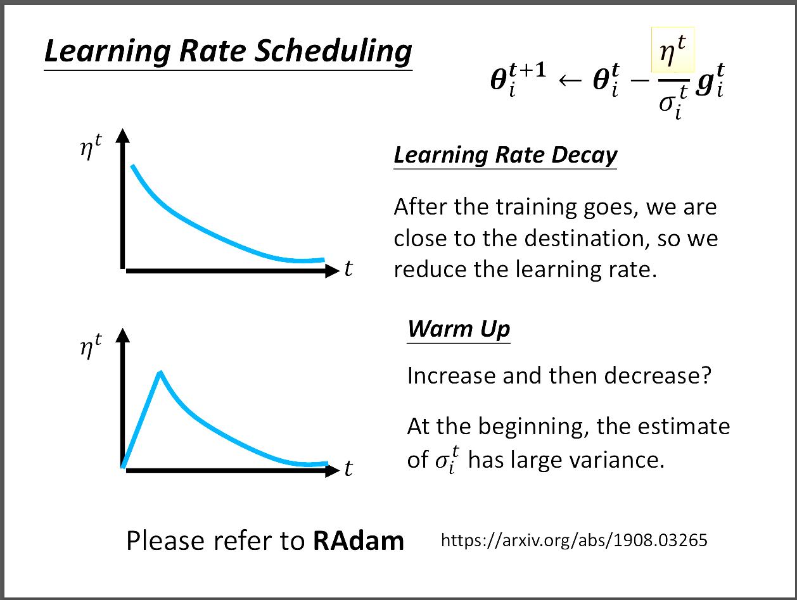

台大教授李宏毅老師[機器學習概論2021][類神經網路訓練不起來怎麼辦 (三)：自動調整學習速率 (Learning Rate)]
📘 文章探討
1️⃣Learning rate對訓練的影響
2️⃣對同一參數做learning rate調整
3️⃣對同一參數不同gradient做learning rate調整
4️⃣Learning rate decay & Warm up
5️⃣Deep(Hidden Layer)
6️⃣Reference
1️⃣Learning rate對訓練的影響
其實每次訓練卡住不一定是critical point的影響，甚至很多時候到不了critical point。

原因出在learning rate的大小。如果learning rate太小，那在error surface的移動會很緩慢，
間接導致訓練時間很久，或是要訓練非常久才可能到達critical point; 若是learning rate太大，
那可能造成訓練一直在error surface的山壁間來回遊蕩，始終無法到達critical point。
本文要探究怎麼調整到好的learning rate，並且改用adaptive learning rate來緩解這個問題。

這張圖片展示了甚麼是learning rate改變的重要性，如果調太大就會像左下那張圖，瘋狂在山壁來回。
若是調太小，在廣大平原的時候前進幅度超級小，訓練效率低下的同時也很難到達期望。
2️⃣對同一參數相同gradient做learning rate調整
接著我們先介紹怎麼對同一個參數做learning rate的調整，雖然error surface非常複雜。

首先我們要怎麼調整η大小，就是將他除上σ，每次的σ都不一樣，那要怎麼決定σ呢?
在Adagrad中，計算σ的方法就是把前面的gradient做RMS(root mean square)，
圖片中的右側講述了σ的大小對更新參數的影響在哪?藍色的loss function坡度小，
代表gradient小，又代表了σ也會小，如此一來下一次的η就會大，因為除以小的數字。
所以坡度小的地方，learning rate就要調大的道理符合。相反的，綠色圖展示了坡度大的情況，
當坡度大的時候，算出來的η就會比較小。
3️⃣對同一參數不同gradient做learning rate調整
我們可以看到這張圖片的下面，告訴我們其實error surface可以非常複雜。
因此我們採用一種叫做RMSProp的方法，這種方法可以對不同的gradient做比例上的調整。
我們剛剛上一小節都假設每個gradient都相同，但這裡可以把最新的gradient的比例調大，
使得我們在遇到最近的error surface得出的gradient可以有較大的影響力，
並且改變η的反應也加快。所以等同於α這項可以動態調整，也是一種hyperparameter。
現在常用的adaptive learning rate使用Adam，Adam就是RMSProp+Momentum。
4️⃣Learning rate decay & Warm up
首先我們先探討為什麼會出現圖片中左側那樣，在靠近目的地的時候，突然出有類似爆炸的情況發生。
其實就是因為走在平原的末期，σ已經非常的小了，這時η就會非常的大，導致上下震盪。
但因為往上或往下到gradient大的地方時，又會校正回歸，也就是σ又會變大，
因此才會有圖片看到的那樣。但是，有方法可以改善這種情況!
我們可以用learning rate decay或warm up這兩種方法解決。
首先甚麼是learning rate decay呢?如圖片中的上面，我們可以看到隨著時間，η也變小，
為什麼要隨著時間越久把η調低呢?原因在於隨著時間流逝，會越接近到終點，
快到終點時就不需要那麼大的learning rate，因此當我們採用learning rate decay這種方法之後，
結果就會像圖片中的右下那樣，讓我們趨於平緩，比較不會出現那種爆炸的情況發生。

但是有些資料在模型訓練的時候不適合用learning rate decay這種方法，
因此衍生出warm up，這種方法的目的在於，模型一開始訓練的時候，
應該先探索附近的gradient，所以要慢慢探索，也就是learning rate初始值要小，
然後再慢慢調大learning rate，並用learning rate decay的方法，適用於BERT。